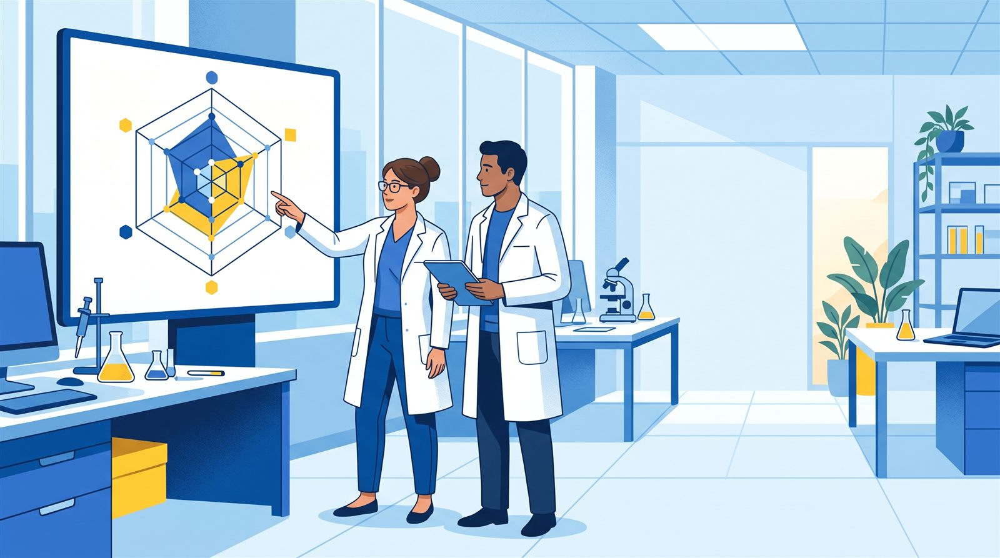
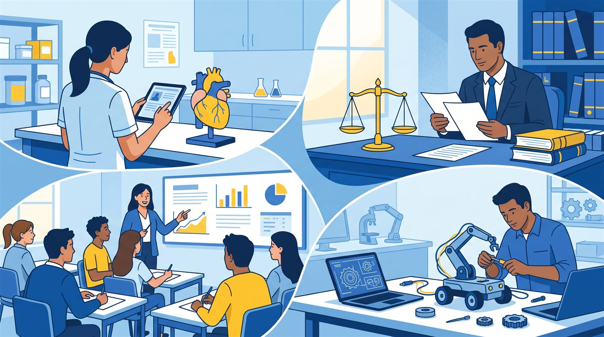

¿En qué nivel de madurez está tu desarrollo? Respóndelo con hechos, no con intuición.
Cuéntanos qué has logrado. La página calcula el nivel de tu tecnología, mercado, propiedad intelectual, equipo, financiación e impacto social, y lo dibuja en una telaraña. No necesitas saber de antemano en qué nivel estás.
Sin registro. Puedes hacerlo en varias sesiones: tu avance se guarda en este navegador.

Cuatro pasos, y la página hace la cuenta
Describe tu desarrollo
Diligencias la ficha de caracterización: quiénes son los creadores, qué problema resuelve, qué propiedad intelectual tiene y qué redes conoces.
Dinos qué tipo de resultado es
Área de conocimiento y tipo de resultado: un protocolo clínico, un prototipo o una metodología no se miden igual. Adaptamos la escala y ponemos ejemplos de tu campo.
Responde con ejemplos y sube evidencia
Preguntas de Sí o No, cada una con un ejemplo. Si respondes «Sí», adjuntas el soporte: un informe, un acta, un radicado o un enlace.
Recibe tu telaraña
Ves tu nivel en cada dimensión, qué te falta para subir y descargas el paquete para enviarlo a Transferencia.
Seis dimensiones, cada una de 1 a 9
Un desarrollo puede ser técnicamente sólido y estar verde en equipo o financiación. Por eso no hay un solo puntaje: hay un perfil.

Un protocolo clínico no se mide como un prototipo
Antes de las preguntas, te pedimos tu área de conocimiento y el tipo de resultado. Con eso adaptamos la escala a tu lenguaje y cada pregunta trae un ejemplo de tu campo.
- Salud y psicología: protocolos, intervenciones e instrumentos.
- Derecho: propuestas normativas, guías y herramientas jurídicas.
- Sociales, educación, economía y artes: metodologías, programas y modelos.
- Ingeniería y ciencias naturales: prototipos, dispositivos y software.
Tu «Sí» vale más con evidencia
Cada vez que respondes «Sí», puedes adjuntar el soporte: un informe, un acta, un radicado, una foto del prototipo o un enlace. La Oficina de Transferencia revisa los soportes y confirma los que verifica.
- Sin evidencia, tu respuesta queda como declarada.
- Con evidencia, queda respaldada.
- Verificada por Transferencia, queda confirmada.
¿De dónde proviene este diagnóstico?
No es un invento local: parte de un modelo internacional para evaluar la madurez de una innovación, adaptado a los resultados de investigación de la Universidad Colegio Mayor de Cundinamarca.
KTH Innovation Readiness Level™
Modelo desarrollado por KTH Innovation, del KTH Royal Institute of Technology (Estocolmo, Suecia). Valora una innovación en una escala de 1 a 9 en seis dimensiones: tecnología, cliente, negocio, propiedad intelectual, equipo y financiación. Está disponible públicamente bajo licencia Creative Commons.
La escala TRL
La escala de madurez tecnológica (Technology Readiness Level) nació en la NASA en los años setenta, y el modelo de KTH se inspira en ella. En este diagnóstico, los niveles de TRL se describen con base en las definiciones de MINCIENCIAS (2019) y de la Agencia Espacial Europea (ESA).
Adaptación institucional
La Universidad Colegio Mayor de Cundinamarca reúne cliente y negocio en una dimensión de mercado, incorpora la madurez social, redacta los criterios como preguntas con ejemplos por disciplina y pide evidencia para respaldar cada respuesta.
Fuentes: kthinnovationreadinesslevel.com · Licencia CC BY-NC-SA 4.0 del modelo original
Preguntas frecuentes
¿Y si no sé en qué nivel estoy?
No tienes que saberlo. Respondes por hechos («¿construyó un prototipo de laboratorio?») y la página deduce el nivel: es el más alto en el que cumples todos los criterios de ese nivel y de los anteriores.
Mi desarrollo no es tecnológico (psicología, derecho, sociales…). ¿Aplica?
Sí. Al elegir tu área y tu tipo de resultado, las preguntas se acompañan de ejemplos de tu campo y la escala tecnológica se traduce a tu lenguaje: por ejemplo, «prototipo» pasa a ser la versión piloto de tu protocolo, instrumento o metodología.
¿Cómo guardo mi diagnóstico y lo retomo después?
Al final pulsa «Guardar mi avance (archivo)»: se descarga un archivo en tu computador, no tienes que abrirlo. Cuando quieras seguir, entra otra vez, pulsa «Continuar un avance guardado» y súbelo: recuperas tu ficha, tus respuestas y tus evidencias para editarlas. El informe en PDF es aparte: sirve para leer y compartir, no para editar.
¿Es obligatorio subir evidencia?
No para avanzar, pero sí para que tu «Sí» cuente en la capa «Con evidencia» y pueda ser verificado. Un «Sí» sin soporte queda marcado como pendiente.
¿Dónde quedan mis datos y archivos?
Mientras diligencias, todo queda guardado solo en tu navegador, en este equipo. Tus datos y archivos salen de tu equipo únicamente cuando tú pulsas «Enviar» (o descargas el paquete) para entregarlos a la Oficina de Transferencia, y antes debes autorizar el tratamiento de tus datos.
¿Qué pasa si respondo «No» en un nivel?
Ahí queda tu nivel actual en esa dimensión. La página te muestra qué criterios te faltan para subir al siguiente. Los niveles superiores se habilitan cuando cumples el actual.
Modo revisión
Importa los paquetes que envían los investigadores, revisa la evidencia de cada respuesta y marca si la verificas. La telaraña se actualiza con lo que confirmes.
Este modo no pide contraseña: cualquier persona con el archivo HTML puede abrirlo. Los casos importados quedan en este navegador.